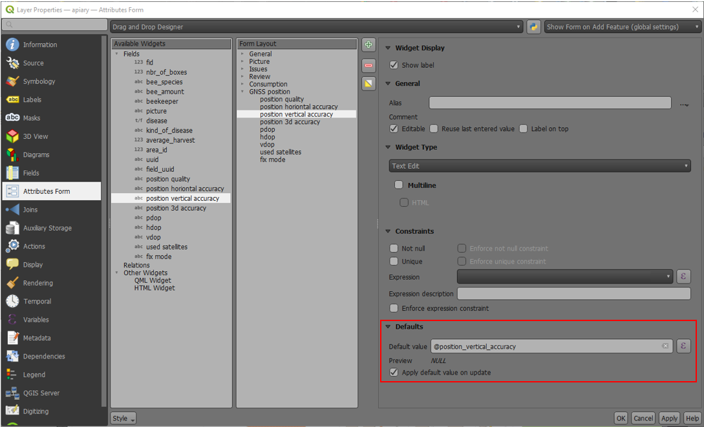
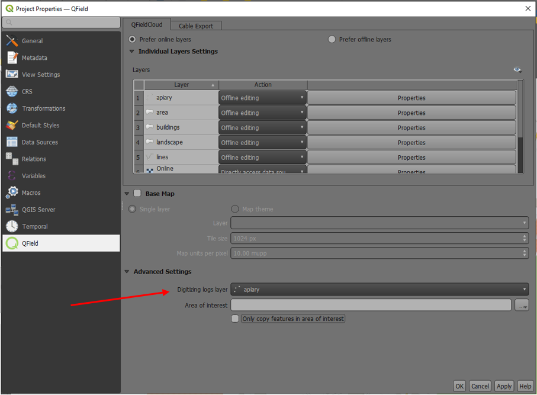

Posicionamiento (GNSS)¶
QField puede hacer uso del GNSS interno (Global Navigation Satellite System, como GPS, GLONASS, Galileo o Beidou). QField también puede conectarse a antenas externas mediante flujos NMEA por Bluetooth, TCP o conexión UDP.
Los dispositivos GNSS también son capaces de medir la altitud junto a la posición actual en 2D sobre la superficie terrestre.
Visualización¶
Cuando el posicionamiento está activado, su posición se mostrará en azul en el mapa. Su ubicación es visible como un punto azul si está quieto o como una flecha que indica su dirección si está en movimiento.
El rayo azul indica la orientación actual de su dispositivo si éste tiene una brújula magnética incorporada.
Un círculo alrededor de su posición actual indica la precisión reportada por el dispositivo de posicionamiento.
Configuración¶
Los siguientes ajustes están disponibles en la pestaña de posicionamiento de los ajustes de QField.
Valor de medida (M)¶
Al digitalizar una geometría en una capa vectorial que contiene una dimensión M, QField añadirá un valor de medición a los vértices individuales siempre que el el cursor de coordenadas se bloquea en la posición actual.
De forma predeterminada, el valor representará la marca de tiempo de la posición capturada (milisegundos desde epoch). Puede cambiar este valor utilizando el cuadro combinado en la configuración de la pestaña de posicionamiento.
Los valores disponibles para elegir son la marca de tiempo, la velocidad de avance, el rumbo, la exactitud horizontal y precisión vertical, así como PDOP, HDOP y VDOP.
Requisitos de exactitud¶
Se puede definir una exactitud mínima deseada para las mediciones. La calidad será informada en tres clases, mala (roja), aceptable (amarillo) y excelente (verde). Estos colores se mostrarán como un punto en la parte superior del botón GNSS.
Los umbrales pueden definirse en la pestaña de posicionamiento de los ajustes.
Si el ajuste Habilitar requisito de precisión está activado, no se puede recoger nuevas mediciones con el cursor de coordenadas bloqueado en la posición actual con un valor de precisión que es malo (rojo).
Compensación de la altura de la antena¶
La altura del poste de la antena en uso puede definirse en los ajustes. Cualquier altitud medida será corregida por este valor.
Altitude correction / vertical grid shift¶
Los valores de altitud pueden corregirse con archivos de desplazamiento de cuadrícula vertical para calcular la altura ortométrica.
Los archivos de desplazamiento de la cuadrícula vertical tienen que estar disponibles para QField poniendo
en la carpeta de la aplicación QField <drive>:/Android/data/ch.opengis.qfield/files/QField/proj.
Una vez que el archivo de desplazamiento de cuadrícula se coloca allí, está disponible en QField en los Ajustes de posicionamiento en Desplazamiento vertical de la cuadrícula en uso.
Si utiliza la corrección de altitud y un dispositivo de posicionamiento externo es usado, considere desactivar Usar altitud ortométrica del dispositivo.
Los formatos admitidos actualmente son:
- GeoTIFF (.tif, .tiff)
- NOAA Vertical Datum (.gtx)
- NTv2 Datum Grid Shift (.gsb)
- Natural Resources Canada's Geoid (.byn)
Por ejemplo: Para la transformación de ETRS89 (elipsoide de referencia GPS) a NAP (holandés) los usuarios pueden descargar el archivo nlgeo2018.gtx de NSGI y colóquelo en el directorio.
Uso¶
Trabajo de campo
Una breve pulsación del botón GNSS encenderá el GNSS y se centrará en la ubicación actual una vez que la información de posicionamiento esté disponible.
Active el modo de edición y pulse sobre el botón del objetivo, la cruz en el centro significa que está utilizando el posicionamiento GNSS.
{kind=link}
Una pulsación larga en el botón GNSS mostrará el menú de posicionamiento.
Dentro del menú Posicionamiento, puedes activar la opción Mostrar información de posicionamiento que mostrará las coordenadas actuales que se reproyectan dentro de la proyección CRS junto con la información de precisión.
{kind=link}
Nota
Si ve la información WGS 84 lat/lon en lugar de la información en el SRC de su proyecto, es probable que aún no tenga señal.
Uso de un receptor GNSS externo¶
Trabajo de campo
QField admite la conexión a dispositivos de posicionamiento GNSS externos mediante flujos NMEA a través de Bluetooth, TCP, o conexiones UDP.
En Configuración > Posicionamiento, puede encontrar un conjunto de botones para añadir, editar o eliminar dispositivos externos así como una lista desplegable para cambiar entre dispositivos GNSS internos y externos guardados.
{kind=link}
El desglose del soporte de conexiones por plataforma es el siguiente:
| Android | iOS | Windows | Linux | MacOS | |
|---|---|---|---|---|---|
| Bluetooth | * | ||||
| TCP | |||||
| UDP | |||||
| Puerto serial |
(*) La compatibilidad con Bluetooth en Windows se produce a través del puerto serie virtual de forma automática creado por el sistema operativo cuando se conecta al dispositivo GNSS.
Las sentencias NMEA actualmente admitidas son GGA, RMC, GSA, GSV, VTG y HDT.
Nota
Asegúrese de que ninguna otra aplicación, como los proveedores de localización simulada, utiliza la misma conexión.
Registro del receptor externo¶
Si tiene seleccionado un receptor externo como dispositivo de posicionamiento en Configuración > Posicionamiento, encontrará un interruptor Registrar sentencias NMEA del dispositivo a archivo. Si esto está activado, todas las sentencias NMEA procedentes de dispositivos externos de posicionamiento se registrarán en un archivo.
Los registros se colocarán en Android/data/ch.opengis.qfield/files/QField/logs.
{kind=link}
Nota
Tenga en cuenta que si el registro está siempre activado llenará el almacenamiento.
Ubicación simulada¶
Trabajo de campo
Es posible proporcionar una ubicación simulada a través de una aplicación android independiente a QField. Hay varias opciones para ello, una de ellas es Android NTRIP Client.
Para utilizarlo tiene que habilitar las ubicaciones simuladas en su dispositivo Android.
Funcionalidad de posicionamiento promediado¶
Trabajo de campo
Nota
El cursor de coordenadas debe estar bloqueado a la localización actual mediante el botón Bloquear a posición
Hay una función que permite digitalizar utilizando posiciones promediadas.
El estudio se iniciará manteniendo pulsado el botón de añadir vértices, que comenzará a recoger posiciones.
Durante la recogida, aparecerá un indicador encima del cursor de coordenadas que muestra un texto que refleja el número actual de posiciones recogidas. Si está activo un requisito de recuento mínimo de posiciones promediadas, también estará presente una barra de progreso que indica el avance hacia el cumplimiento de ese requisito.
{kind=link}
La configuración para activar un umbral de recuento mínimo de posición media se encuentra en el panel de posicionamiento de la configuración de QField. Cuando está activo, no es necesario mantener pulsado el botón de añadir vértice, un breve toque en el botón iniciará la recopilación de posiciones y añadirá automáticamente la posición promediada cuando se cumpla el requisito de recuento mínimo.
{kind=link}
Cuando se utilizan las variables @gnss_* o @position_ en posiciones promediadas, la variable también representará la media de todas las muestras recogidas.
Configuración del proyecto¶
Preparación en escritorio
Variables de posicionamiento¶
Puede acceder a la información de posicionamiento a través de variables de expresión accesibles en el formulario de atributos. Estas variables sólo estarán disponibles cuando el posicionamiento esté activado.
Estas variables se utilizan habitualmente como parte de expresiones de valores por defecto para que los campos lleven la cuenta de la calidad de los puntos medidos individualmente.
Todas las variables @position_* tienen su correspondiente variable @gnss_*.
Las variables gnss siempre informan de los valores del sensor gnss, incluso cuando la retícula no está ajustada.
@position_source_name- El nombre del dispositivo que dio la información de localización según lo informa el sensor. Para diferenciar entre el sensor interno y el sensor externo. Si la posición se ajusta manualmente, y la no se ajusta a la posición del cursor, el nombre de la fuente es "manual". En caso de que el cursor no se ajuste a la posición, todas las demás variables serán nulas, si necesita esto, utilice las variablesgnss_en su reemplazo.@position_quality_description- Una cadena legible y traducida para la calidad según lo informa el sensor. Por ejemplo, "RTK fijo". Sólo está disponible cuando la mira se ajusta al sensor. - IE@position_coordinate- Un punto con la coordenada en WGS84. Lon, Lat, Altitud tal como la entrega el sensor. Sólo está disponible cuando el retículo se ajusta al sensor. -x(@position_coordinate)- IE@position_horizontal_accuracy- La precisión horizontal de la coordenada (en metros) como lo informa el sensor. Sólo está disponible cuando el punto de mira se ajusta al sensor. - IE@position_timestamp- La marca de tiempo de la posición en UTC tal y como la informa el sensor. Sólo está disponible cuando el punto de mira se ajusta al sensor. - IE@position_direction- La dirección del movimiento en grados a partir del norte verdadero, tal y como lo informa el sensor. Sólo está disponible cuando el punto de mira está ajustado al sensor. - IE@position_ground_speed- Velocidad del suelo (en m/s) según el sensor. Sólo es disponible cuando el punto de mira se ajusta al sensor. - IE@position_magnetic_variation- El ángulo entre la componente horizontal del campo magnético y el norte verdadero, en grados, tal y como informa el sensor. También se conoce como declinación magnética. Un valor positivo indica una dirección en el sentido de las agujas del reloj dirección de las agujas del reloj desde el norte verdadero y un valor negativo indica una dirección contraria a las agujas del reloj. Sólo está disponible cuando el punto de mira se ajusta al sensor. - IE@position_vertical_accuracy- La precisión vertical de la coordenada (en metros) según se informa el sensor. Sólo está disponible cuando el punto de mira está ajustado al sensor. - IE@position_3d_accuracy- La precisión tridimensional de la coordenada (en metros), 3D-RMS según lo informado por el sensor. Sólo está disponible cuando el punto de mira se ajusta al sensor. - IE@position_vertical_speed- La velocidad vertical (en m/s) según el sensor. Está disponible sólo cuando el punto de mira se ajusta al sensor. - IE@position_averaged_count- Esta variable contiene el número de posiciones recogidas de que se calculó una posición promediada al digitalizar en este modo. Para posiciones no promediadas el valor será0(cero). - IE@position_pdop- Dilución de precisión de la posición según el sensor. Es sólo está disponible cuando el punto de mira se ajusta al sensor. - E@position_hdop- Dilución horizontal de la precisión según el sensor. Está disponible sólo cuando el retículo se ajusta al sensor. - E@position_vdop- Dilución vertical de la precisión según el sensor. Está sólo está disponible cuando el punto de mira se ajusta al sensor. - E@position_number_of_used_satellites- Número de satélites reportados por el sensor. Sólo está disponible cuando el punto de mira se ajusta al sensor. - IE@position_used_satellites- Una lista de los satélites en uso (pri) según lo informado por el sensor. Está sólo está disponible cuando la retícula se ajusta al sensor. -array_to_string(array_foreach(@position_used_satellites, @element), ', ')- E@position_fix_status_description- El estado de la Corrección GPS "NoData", "NoFix", "Fix2D" o "Fix3D" según lo informado por el sensor. Sólo está disponible cuando el punto de mira se ajusta al sensor. - E@position_fix_mode- Modo de fijación (donde "M" = Manual, obligado a operar en 2D o 3D o "A" = Automático, 3D/2D) tal y como informa el sensor. Sólo está disponible cuando el punto de mira se ajusta al sensor. - E
Info
- I: Fuente de posición interna E: Fuente de posición externa (NMEA).
- Las variables que contienen
satélitesno están disponibles en iOS.
- Ejemplos:
-
- cuando el punto de mira se ajusta al sensor -
@gnss_horizontal_accuracy> La exactitud horizontal de la coordenada (en metros) como informada por el sensor. -@position_horizontal_accuracy> La exactitud horizontal de la coordenada (en metros) informada por el sensor. -@position_source_name--> nombre del sensor.
- cuando el punto de mira se ajusta al sensor -
- cuando el punto de mira se mueve manualmente -
@gnss_horizontal_accuracy> La exactitud horizontal de la coordenada (en metros) como informada por el sensor. -@position_horizontal_accuracy> El valor esNULL. -@position_source_name> El valor esmanual.
Information for GNSS Z value with Vertical grid shift in use: - Compensación de la altura de la antena=falso
| Vertical Grid Shift in use | point Z Value z(geometry) | GNSS Device z(@position_coordinate) | Visualización de QField | Etiqueta de QField |
|---|---|---|---|---|
| Ninguno | Z ellipsoidal device value | Z ellipsoidal device value | Z ellipsoidal device value | Altitud: xxx.xxxx m |
| Orthometric from device | Z orthometric device value | Z orthometric device value | Z orthometric device value | Altitud: xxx.xxxx m (orto.) |
| USER_Shift_Grid.GTX vertical grid shift |
Z shiftgrid value | Z ellipsoidal device value | Z shiftgrid value | Altitud: xxx.xxxx m (cuadrícula) |
Registrador de vértices¶
Es posible configurar una capa de registro de los vértices recogidos. Esto permite mantener un seguimiento de los metadatos de cada vértice, como la calidad del GNSS atributos y más. Para configurar esto, se puede añadir una capa de puntos al proyecto y configurar los atributos para almacenar esta información.

Entonces debería asignar el rol registrador de digitalización a una capa de puntos.
Vaya a QFieldSync > Propiedades del proyecto.

Para ser más eficaces, los atributos de capa deben tener valores predeterminados que se basen en las variables de posicionamiento enumeradas anteriormente.